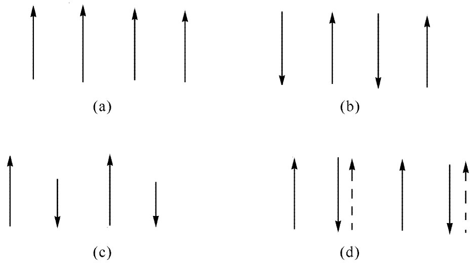
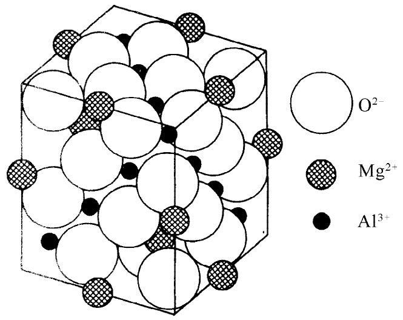

我们现在想要讨论一些更奇异的磁性材料。在周期表上有许多元素其内电子壳层尚未填满因而具有原子磁矩。例如，紧靠着铁磁性元素铁、镍、钴，你就会找到铬和锰。为什么它们 不是铁磁性的呢？答案是，对于这些元素式（37.1）中的λ项具有相反的符号 。例如，在铬晶格中，铬原子的自旋逐个 改变方向，如图37-13（b）所示。所以铬从它本身的观点来看是 “磁性”的，但在技术上却不是令人感兴趣的，因为缺乏外部 磁性效应。这样，铬就是量子力学效应使自旋交替的那类材料的一个例子。像这样一种材料称为反铁磁性 的。反铁磁材料中的自旋排列也与温度有关。低于某一临界温度，所有自旋都会在每隔一列上排列整齐，但当晶体被加热到高于某个温度——还是称为居里温度——时，自旋便突然变得混乱起来。在内部发生了一次突然转变。这一转变可以在比热曲线中看到，也在某些独特的“磁性”效应中表现出来。例如，这种交替自旋的存在可通过被铬晶体中散射出来的中子而加以证实。由于中子本身具有自旋（和磁矩），所以它就具有不同的散射振幅，这取决于它的自旋是平行还是反平行于散射物质中的自旋。这样，当晶体中的自旋交替与具有无规分布时，我们会得到不同的干涉图样。
|  |  |
| 图37-13 在各种不同材料中电子自旋的相对取向：（a）铁磁性；（b）反铁磁性；（c）铁氧体；（d）钇铁合金（虚线箭头代表包括轨道运动在内的总角动量方向） | 图37-14 尖晶石（MgAl2 O4 ）矿物的晶体结构。Mg+2 离子占据正四面体位置，每个被四个氧离子所包围；Al3+ 离子占据八面体位置，每个被六个氧离子所包围［转载自Kittel C. Introduction to Solid State Physics ，2nd ed.，1956］ |
还有另一种物质，量子力学效应促使其中电子的自旋交替排列，但无论如何它还是铁磁性 的——这就是说，这种晶体具有净的永久磁化强度。这一类物质的内部结构如图37-14所示。图上显示出尖晶石 、即MgAl2 O4 的晶体结构，这如同图上所示，乃是不带 磁性的。这种氧化物含有两种金属原子：镁和铝。现在，若用两种像铁和镍、或锌和锰的磁性元素来代替镁和铝——换句话说，如果放进磁性 原子而不是原来的非磁性原子——一件有趣的事情就会发生。让我们称其中一种金属原子为a而另一种金属原子为b，那么下述各种力的组合就必须加以考虑。有一种a-b互作用，企图促使a原子与b原子具有相反自旋——因为量子力学总是给出相反符号（除了铁、镍和钴那些神秘的晶体以外）。然后，还有直接的a-a相互作用，企图促使a与a间反向，另外还有企图促使b与b间反向的那种b-b相互作用。现在，我们当然不能使每一件东西与其他每一件东西都相反——a与b反，a与a反，而b又与b反。大概是由于a与a间的距离较大并有氧原子存在（尽管我们实际上还不知道其所以然），结果是a-b相互作用比a-a或b-b的较强。因此，大自然在这种情况下所采用的解答是使所有的a都互相平行 ，以及所有的b也都互相平行 ，可是这两个系统却互相反向 。该解答会给出最低能量，因为a-b相互作用较强。结果变成：所有的a都是自旋向上，而所有的b则都是自旋向下——当然，或者与此相反。但如果a型原子与b型原子的磁矩不相等 ，则我们该得到如图37-13（c）所示的那种情况，而在材料中就可能存在净的磁化强度。于是材料将属于铁磁性的——虽然弱了一点。这样的材料叫做铁氧体 。它们不具有像铁那么高的饱和磁化强度——由于明显的原因——因而只对较弱的场才有用。但有一个十分重要的差别——它们都是绝缘体，铁氧体是铁磁绝缘体 。在高频场中，它们会有十分微小的涡电流，并从而可用于诸如微波系统中。微波场能够进入像这样的绝缘材料的内部，而它们在像铁那样的导体中将被涡流逐出体外。
还有另一类最近才被发现的磁性材料——称为石榴石 的正交硅酸盐族的成员。它们也是在晶格中含有两种金属原子的晶体，因而我们又有几乎可以随意地代替其中两个原子的那种情况。在许多感兴趣的化合物中，有一种是完全磁性的，它在该石榴石结构中含有钇和铁，而它所以具有铁磁性的原因是很难理解的。这里量子力学又再使相邻的自旋反向，从而形成铁中电子自旋指向一方、而钇中电子自旋则指向相反的一个同步系统。但钇原子比较复杂，它是一种稀土元素，它的磁矩从电子的轨道 运动中获得大的贡献。对于钇来说，轨道运动的贡献与自旋方面的贡献相反 ，并且还比较大。于是，借助不相容原理而工作的量子力学，虽然会使钇的自旋 与铁的自旋反向，但由于轨道效应就仍能使钇原子的总 磁矩平行 于铁的原子磁矩——如图37-13（d）所简略表示的那样。因此，该化合物就是一种正常的铁磁体。
铁磁性的另一个有趣例子存在于某些稀土元素中，它与自旋的一种更特殊的排列有关。该材料既不是自旋全都平行意义上的铁磁性，也不是每个原子的自旋相反意义上的反铁磁性。在这些晶体中，处于某一层内 的所有自旋都互相平行，并躺在该层的平面之上。在邻接的一层内，所有自旋又彼此平行，但却指着稍微不同的方向。在接下来的一层又再有另一个方向，如此等等。结果是，局部的磁化强度矢量按螺旋式变化——当沿一条垂直于各层的直线通过时，逐层的磁矩在旋转。试图分析当加一磁场于这样一个螺旋体时会发生什么情况——在所有各原子磁体中所必须进行的一切扭转和旋转——是很有趣的（有些人就喜欢 用这些东西的理论来自我取乐）。不仅存在“平坦”螺旋的那些情况，也还存在逐层磁矩，它们的方向会形成一个锥面，以致它既具备一个螺旋分量而又具备沿某一方向均匀的铁磁性分量！
在比我们这里所能做出的更高的水平上计算出来的物质磁性，曾经使各种类型的物理学家着迷。首先，有些实际工作者，他们喜欢寻找以更佳方式制造出各种东西来的途径——他们乐于去设计出更为优良而又更加有意义的磁性材料。像铁氧体那类东西的发现或其应用，立即使得那些喜欢看到用灵巧的新方法来做出东西的人们很高兴。除此之外，还有一些人在大自然能够用几条基本定律就产生出的极度复杂性中寻找魅力。仅从唯一一个相同的普遍概念出发，大自然便从铁的铁磁性和磁畴开始，至铬的反铁磁性，又至铁氧体和石榴石的那种磁性，以致一些稀土元素的螺旋结构，等等，等等。要在实验上去发现这些特殊物质中所发生的一切奇异事情是挺令人向往的。然后，对于那些理论物理学家来说，铁磁性代表着若干项十分有趣、但尚未得到解决、而又挺漂亮的挑战。一项挑战就是去理解为什么铁磁性真的会存在。另一项挑战则是去预言在一理想晶格中有相互作用的自旋的统计性。即使忽略任何可能不重要的复杂性，这一问题迄今仍难以充分理解。那么有趣的原因在于它竟是这么容易表述的问题：设在常规晶格中存在以如此这般的规律相互作用着的大量电子自旋，试问它们究竟会做什么呢？问题虽然简单地说明了，但多年来人们就是难以对它做出完全的分析。尽管对于温度不太靠近居里点的情况已做了相当仔细的分析，但在居里点处的突然转变的理论仍有待完成。
最后，有关自旋的原子磁体系统——在铁磁性材料、或在顺磁性材料、以及在核磁性中——的整门学科，对于物理系的高年级学生来说，也已是一种具有魅力的东西。这些自旋系统可用外加磁场加以推和拉的作用，从而人们就能够利用共振、弛豫效应、自旋回波以及其他各种效应达到许多目的。它被用作许多复杂热力学系统的原型。但在顺磁性材料中情况往往相当简单，而人们已经很高兴去做实验以及从理论上解释那些现象。
我们现在已结束了电学和磁学的学习。在第1章中，我们曾谈到自从早期希腊人对于琥珀和天然磁石的奇怪行为进行了观察以来已经大有进步。可是在我们一切冗长而又复杂的讨论中，却从未解释过为什么当我们摩擦一块琥珀时会在它上面获得电荷 ，而我们也没有解释过为什么一块天然磁石会被磁化 ！你可能会说：“呵！我们不过未能得到一个正确符号罢了。”不，比这还要糟些。因为即使我们的确 曾获得过正确符号，仍然会有这么一个问题：为什么在地壳里的天然磁石会被磁化呢？当然，存在地球磁场，但地球磁场又是从哪里来的呢 ？实际上并没有任何人知道——只能有一些良好的猜测。所以你看，我们这一套物理学竟是一套膺品——从天然磁石和琥珀现象出发，而就在对这两者都不很了解处收场，但是，我们在这一过程中也已经 学到了大量十分令人振奋而又非常实用的知识！
[1] 为了同上一章的工作一致，我们用H=B-M/（∈0 c2 ），而不是用B来写出这些方程。你也许喜欢把它写成U=±μBa =±μ（B+λ′M/∈0 c2 ），其中λ′=λ-1。但那是同一件事。
[2] 你可能会觉得奇怪，那些或者“向上”或者“向下”的自旋怎么又能够“斜着”了呢！这问题提得好，但我们此刻不需去担心它。我们将采取经典观点，认为原子磁体都是一些经典的磁偶极子，可以在斜着方向受到磁化。要求对量子力学相当熟悉，才能理解物体如何能够“上与下”以及“左与右”同时全部被量子化。